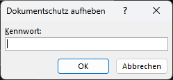

hi, ich bin
patrick
manchmal funktioniert etwas
projekte
Das meiste meiner Arbeit ist privat, deshalb kann ich hier nicht viel zeigen

Entfernt den Schreibschutz von einem Word-Dokument (verwendet von DeepL, etc) ohne Kennwort
letzte 5 tracks